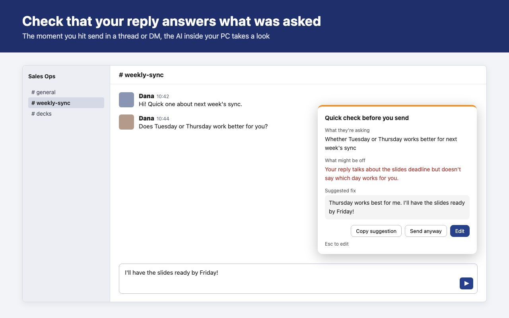
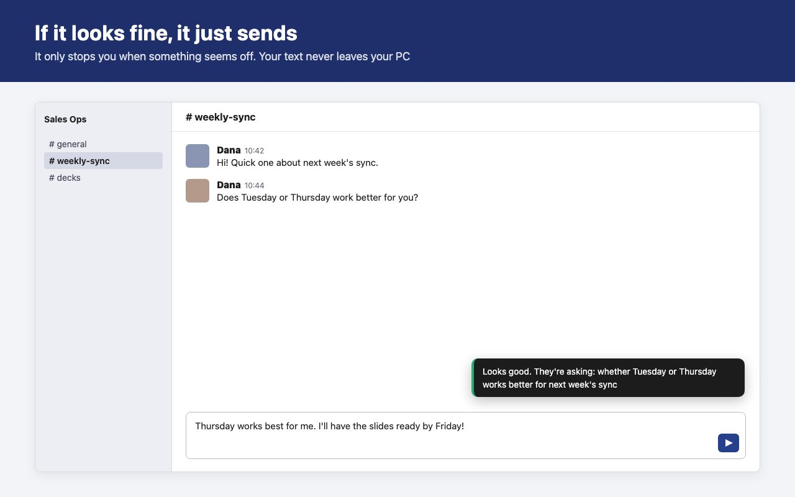

Make sure your reply answers what was asked
A Chrome extension for Slack in the browser. The moment you hit send, the AI inside your PC reads the last few messages and your draft. It stops you only when your reply seems to miss the question, and suggests a fix.
The reply it catches
"Does Tuesday or Thursday work better for you?" — and you answer "I'll have the slides ready by Friday!" When you're busy, it's easy to reply to something other than what was asked. They have to ask again, and you notice only after it's sent.

If your reply answers the question, it's sent right away.

The feedback text in these images is an example. The real text is written by the AI each time.
What happens when you press Send
| Case | What it does |
|---|---|
| Looks fine | Sends right away and shows a short "Looks good" |
| Looks off | Holds the message and shows the panel. Copy the fix, send it anyway, or go back and edit (Esc) |
| AI not ready, or too slow | Sends anyway. The check never stops you from sending |
Works in channels, threads and DMs. Short messages (under 8 characters by default), messages to yourself, and conversations you choose to skip are not checked.
Your text never leaves your PC
The check runs on Gemini Nano, the AI model built into Chrome. Message text is not sent to our server or anyone else's. There is no account, and your license key is verified inside the extension, so nothing goes over the network while you use it.
Details are in the privacy policy.
Requirements
Chrome's built-in AI runs only on some computers. After installing, click the toolbar icon and use "Try it" to see whether it works on yours. The 14-day trial gives you time to find out.
- Chrome 138 or later, on Windows 10/11, macOS 13 or later, Linux, or Chromebook Plus
- 22 GB of free disk space (Chrome downloads the AI model once)
- A GPU with more than 4 GB of video memory, or 16 GB of RAM and 4 CPU cores
- Not available on phones, tablets, or the Slack desktop app
Requirements are from Google's Prompt API documentation.
Get it
$29 / year one-time payment, no automatic renewal
- Install it from the Chrome Web Store first. It's free for 14 days, no card needed
- To keep using it, buy a one-year license key with the button below
- Your key appears right after checkout. Click the extension icon, paste it into "License key" and press "Activate"
- If the trial ends without a key, checking simply stops. Sending works as usual
Under review on the Chrome Web Store. You can install it from here once it is published.
Checkout is handled by Stripe. Sales tax and VAT are included in the price. Questions: yohei.19901031+chatreplycheck@gmail.com